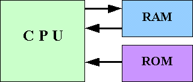

Reading data on RAM
When reading data, electric currents are sent through address lines to turn the transistors on, creating a circuit connecting to the capacitors. Then, previously charged values flow back to the software through data lines, these are 1s. Positions that return no electric signals are 0s. Collected 1s and 0s from eight data lines form one byte. (White, 1998)
